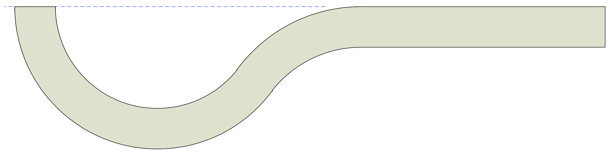
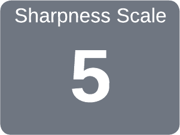

|
Because sharp enough ... usually is not |

|
Lock Mortise Chisel

Bevel face alignment with the handle
The Lock Mortise Chisel is essentially a scraping chisel.

click on the gray block to see more
Hone the bevel face in line with the handle by rubbing a diamond file against it.
|
Show us a man who never makes a mistake and we will show a man who never makes anything. The capacity for occasional blundering is inseparable from the capacity to bring things to pass. Herman Lincoln Wayland |
A good source for the shape of a handle is The Wood Turner's Handy Book (1887), by Paul N Hasluck (see pg. 67, fig. 39).
Other good sources are:
Some of the most important tools in my shop are my chisels. Whether I am chopping, carving, or paring, they are in my hands all day. As I have gotten older and my arthritis/tendonitis has gotten worse, my needs have changed. In this blog, I will talk about my preferred chisel handle and show how I make a replacement handle to suit my needs.